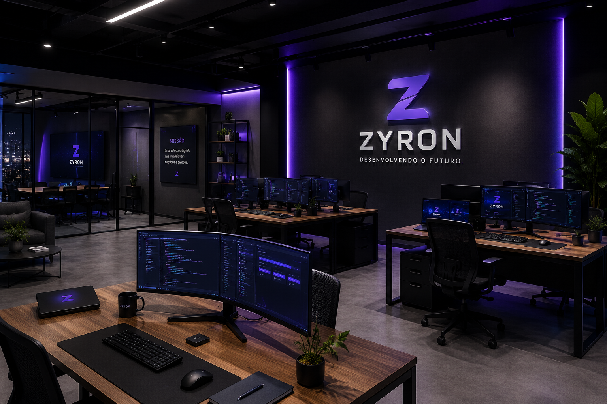
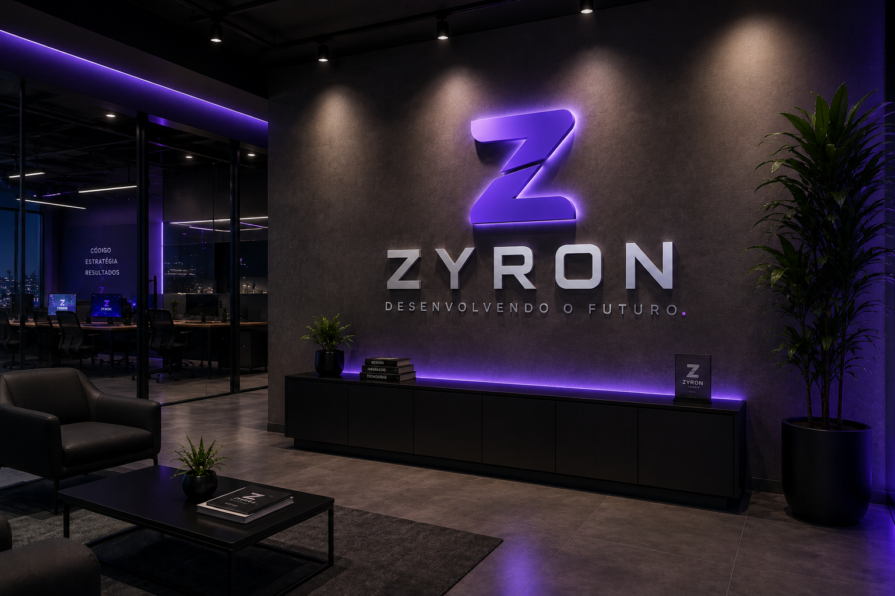

Nossa história
Mais do que desenvolver páginas, criamos produtos digitais que ajudam empresas a gerar autoridade, vender melhor e operar com mais eficiência.
Criamos sites, sistemas e aplicativos modernos para empresas que querem fortalecer a marca, automatizar processos e crescer com tecnologia, estratégia e performance.
A ZYRON nasceu para transformar ideias em experiências digitais de alto impacto, unindo design, desenvolvimento e estratégia em cada entrega.
Mais do que desenvolver páginas, criamos produtos digitais que ajudam empresas a gerar autoridade, vender melhor e operar com mais eficiência.
Construir soluções digitais elegantes, rápidas e preparadas para gerar resultados reais.
Ser referência em tecnologia criativa para empresas que querem crescer com presença digital forte.
Clareza, performance, parceria, estética premium e compromisso com evolução constante.
Do primeiro site ao sistema completo, criamos soluções sob medida para fortalecer sua operação digital.
Sites modernos, rápidos, responsivos e focados em conversão.
Plataformas sob medida para automatizar processos e organizar dados.
Apps intuitivos para Android e iOS, preparados para crescer com o negócio.
Interfaces elegantes, claras e pensadas para facilitar a experiência do usuário.
Fluxos inteligentes para reduzir tarefas manuais e aumentar produtividade.
Conexões com APIs, sistemas, pagamentos, CRM, WhatsApp e ferramentas externas.
Criamos projetos modernos, escaláveis e pensados para gerar confiança desde o primeiro clique.
Sites leves, rápidos e preparados para entregar uma experiência superior.
Uso de ferramentas atuais para criar produtos modernos e fáceis de evoluir.
Cada tela é planejada para resolver problemas reais e apoiar o crescimento.
Acompanhamento antes, durante e depois da entrega do projeto.
Exemplos visuais que representam o padrão de qualidade, estética e organização da ZYRON.
Plataforma empresarial com foco em performance, organização e dashboards inteligentes.

Conceito visual que traduz cultura, criatividade e tecnologia em uma presença premium.

Marca sólida, moderna e preparada para comunicar inovação com autoridade.
“A ZYRON traduziu nossa ideia em uma presença digital muito mais profissional.”
Cliente ZYRONSite institucional“O projeto ficou rápido, bonito e muito mais claro para nossos clientes.”
Cliente ZYRONLanding page“A organização do sistema mudou a forma como acompanhamos nossos processos.”
Cliente ZYRONSistema webEscolhemos cada ferramenta conforme a necessidade do projeto, priorizando performance, segurança e evolução.
A ZYRON está pronta para transformar sua ideia em uma solução digital moderna, elegante e preparada para crescer.
Solicitar OrçamentoPreencha os dados e envie uma mensagem direto pelo WhatsApp da ZYRON.